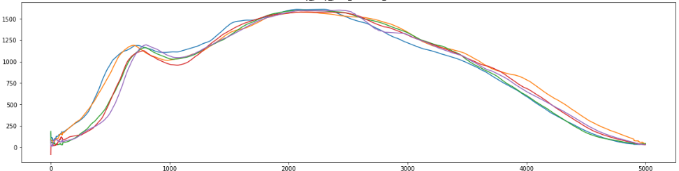

Semester Project : Prediction of Ground Reaction
This project started with the observation that running performances nowadays are made using stance force platforms which are very expensive. So, it's hard to study it in real conditions because to create a 10 meters line it cost 100 000€, so I let you imagine what it corresponds to study the performance of a marathon athlete.
The solution chosen by the researchers is to try to predict the stance force values using the acceleration data of tibias and lumbars. So, our role is to use the dataset composed of the acceleration in x, y and z of tibias and lumbars and to predict the z value of a stance force platform.

This is the graph reporting the z value of ground reaction during one passage over a stance force platform.
All the ground reaction value during a running effort get the same graph shape.
The experiment made is concerning 100 tries of a single individual for the first dataset (5000 rows per try)
And then 10 individuals made 10 tries each to create the second dataset (5000 rows per try too).
The experimental methodology is to create combinations of lumbar and tibias features to approach the original stance force platform values
We have two success criterias : our model should have an accuracy over 99% and a mean squared error less under
This project is confidential, so I am not allowed to publish any line of code. There is our conclusions :
We finally achieve our expectations by creating a model based on the LightGBM Regressor from the Python SKLearn library. With this model we reach the success criterias with an accuracy of 99.3% and a mean squared error of 44.68N. By running our model we obtain the folowing graph.
We now need to write an user manual and the documentation of our work to explain our evolution process, so that our work can be reusable.